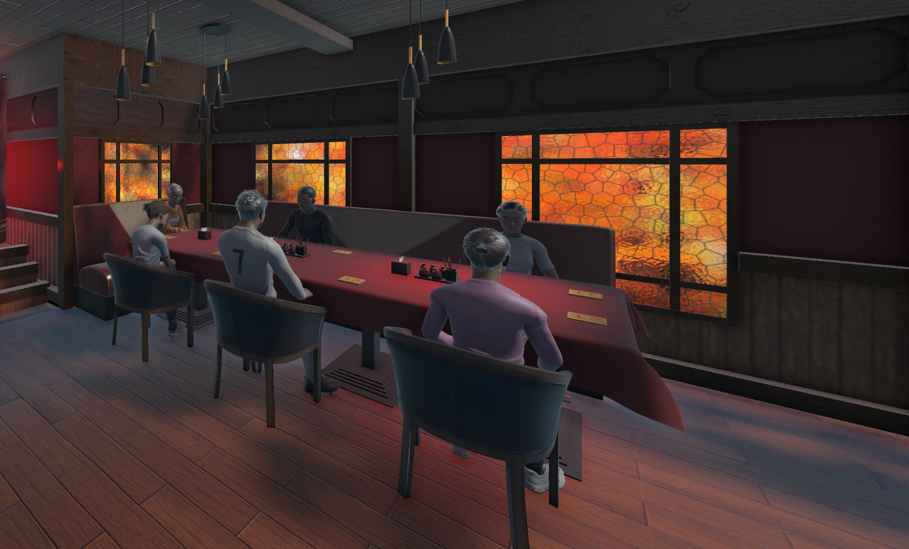
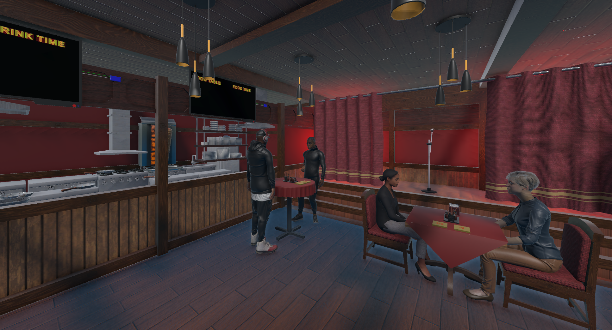
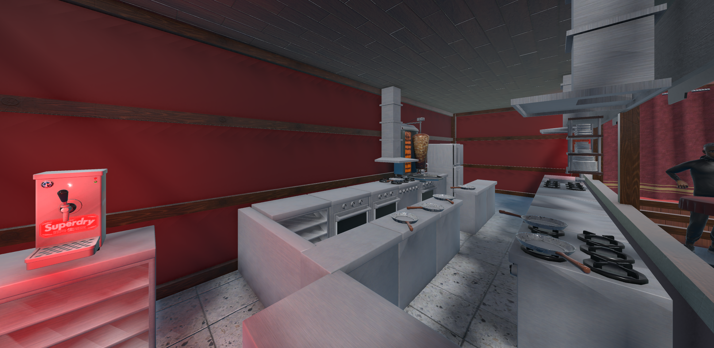
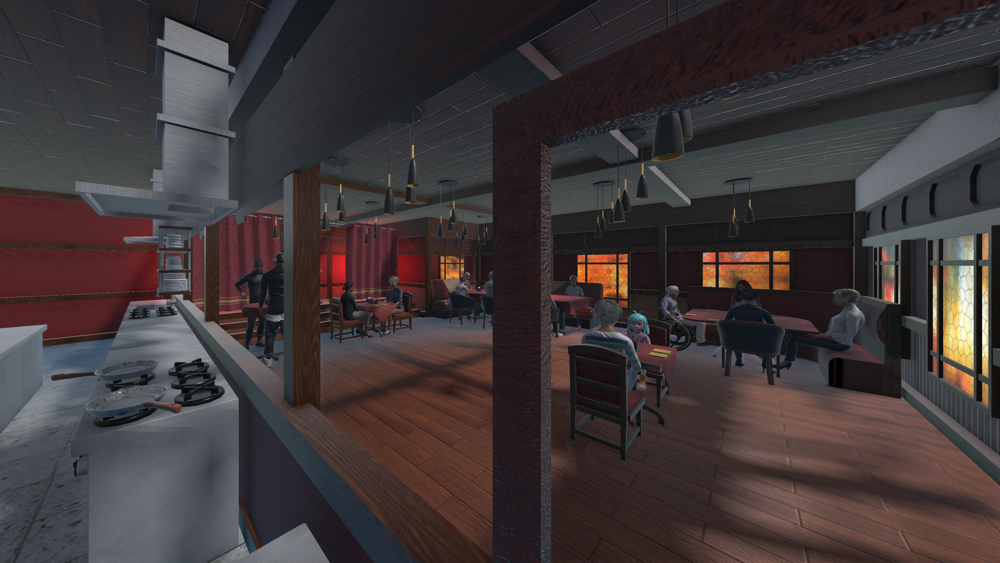
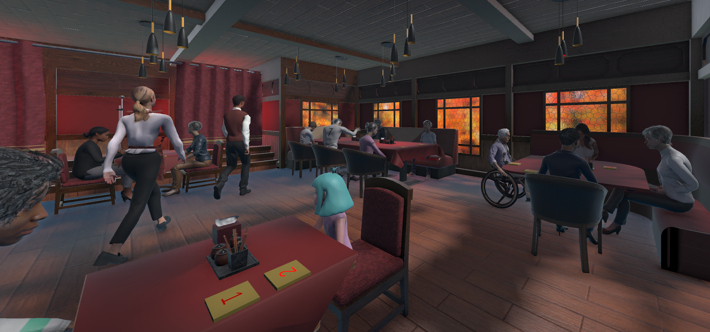
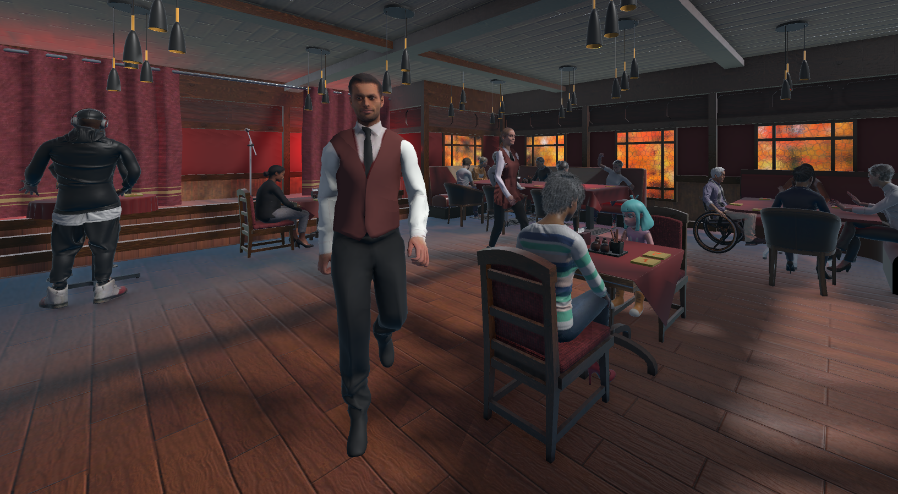
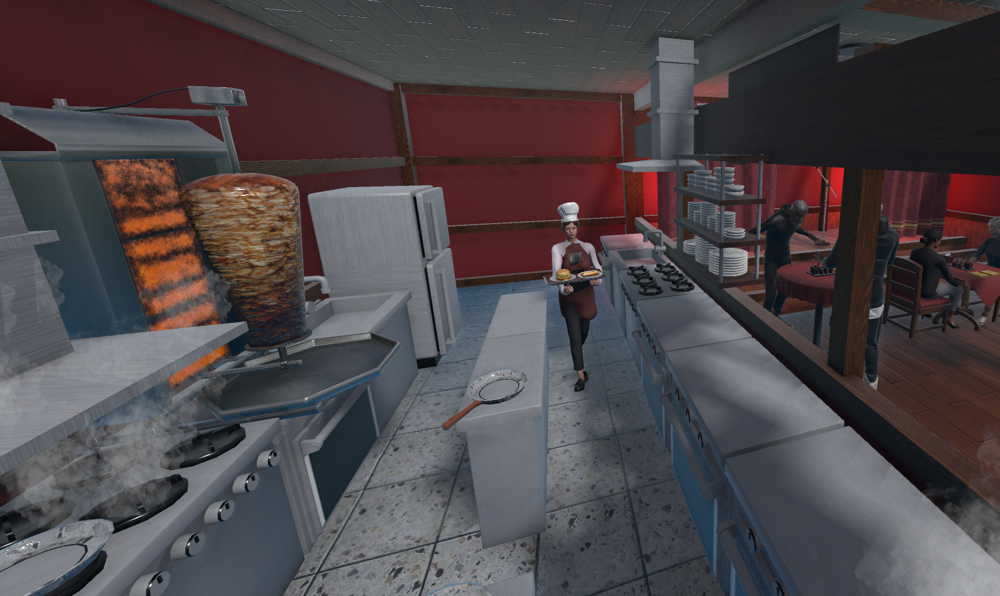
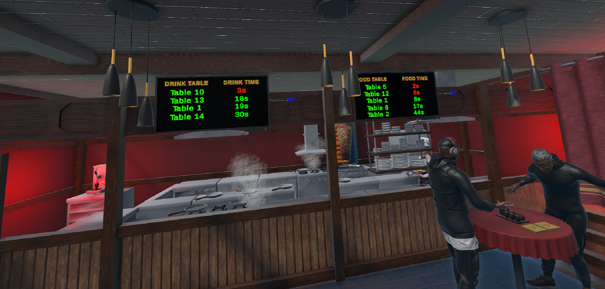
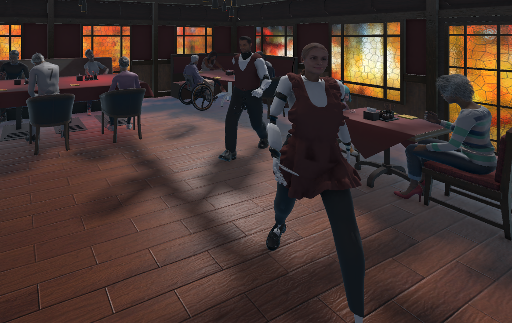
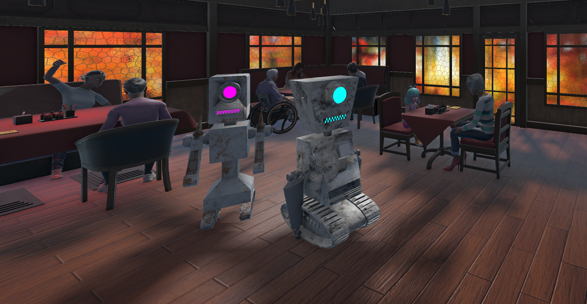

Restaurant VR
Interactive Restaurant VR environment developed in Unity for a doctoral thesis in Bielefeld University.
Project Images










About This Project
Restaurant VR is a Unity VR project focused on creating an interactive Restaurant experience. The project created for a doctoral thesis in Bielefeld University. An Online and in-person User Study was conducted for the thesis and this project was used to have the same feeling for working with different waiters human, humanoid, and mechanic.
- Built with Unity and C#.
- Uses VR Restaurant Environment which reflects a restaurant-like environment.
- Face Expressions recording in VR.
- Many Interactions with waiters inclusion, rejection, and ostracism.
- Movements tracking for different interactions.